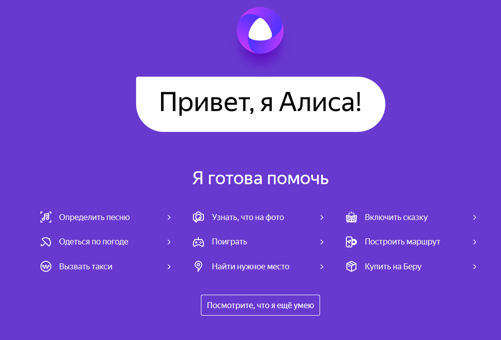
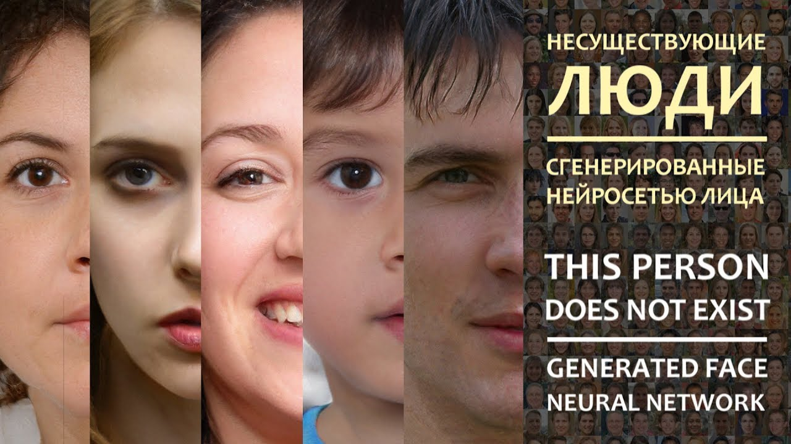
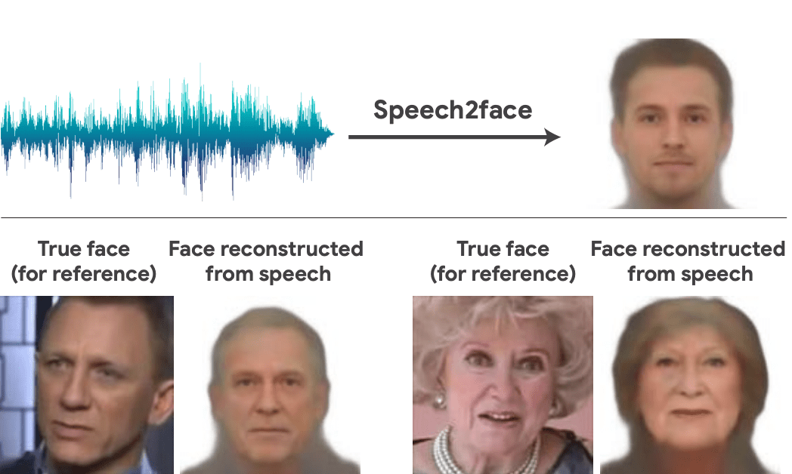

Что такое НЕЙРОННЫЕ СЕТИ
Нейронная сеть — это последовательность нейронов, соединенных между собой синапсами. Структура нейронной сети пришла в мир программирования прямиком из биологии. Благодаря такой структуре, машина обретает способность анализировать и даже запоминать различную информацию. Нейронные сети также способны не только анализировать входящую информацию, но и воспроизводить ее из своей памяти.
Нейронная сеть представляет собой последовательность связанных нейронов.
Нейроны — единицы, получающие и передающие информацию. Сами по себе они не играют важной роли: нейроны имеют значение только в выстроенной из них цепи.
К нейрону поступают входящие сигналы, каждому из которых присвоен определенный вес. Сигнал умножается на свой вес, значения суммируются, и получается единое число, которое получает активационная функция.
примеры НЕЙРОННЫХ СЕТЕЙ
-
Яндекс.Алиса
Виртуальный голосовой помощник, созданный компанией «Яндекс». Распознает естественную речь, имитирует живой диалог, даёт ответы на вопросы пользователя и, благодаря запрограммированным навыкам, решает прикладные задачи. -
ThisPersonDoesNotExist
Нейросеть StyleGAN, создающая на сайте реалистичные изображения людей, которых на самом деле не существует, состоит из двух частей. Одна часть генерирует лица, а вторая часть постоянно оценивает, выглядят ли эти лица поддельными. -
Speech2Face
Speech2Face — модель, которая реконструирует лицо человека по записи его голоса. Нейросеть обучалась на миллионах видеозаписей с YouTube, на которых демонстрируется разговор человека. может ли голос отражать внешние характеристики его обладателя.